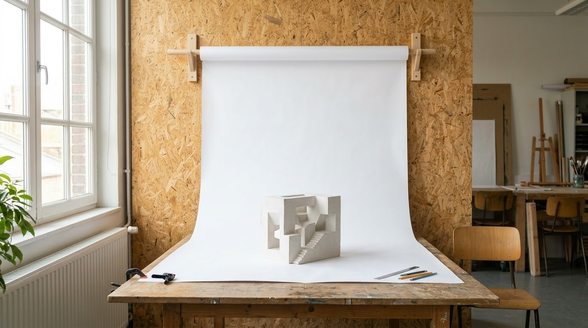
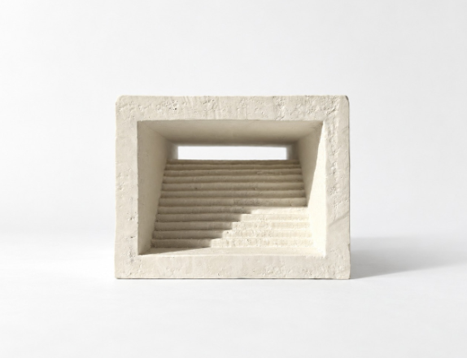
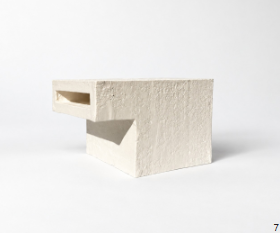

Well done on all your hard work producing the concept models and presenting them professionally. Most of you did good work.
This is general feedback on the presentation only, not the content. Keep it as guidance for your future portfolios.
Process is critical. Show how you got there, not only the final model:
Always take pictures, for the record. You cannot photograph a step after it is gone.
The photo is how most people will see your model. It needs to look professional.

There is a photo backdrop in the studio class. Ask and use it.


Your final portfolio will follow a very similar layout, so do this task properly: the file, styles and grid you set up now can be reused.
The template is indicative. Adapt it and make it yours, but make it better, not worse. Always follow the submission rules: page count, size, orientation. Here: A3 portrait, as a spread.
Two pages side by side, read as one space, like an open magazine. Portfolios are read this way, so design pages in pairs, not one at a time.
Set them first (Layout › Margins and Columns), then place everything on them. Keep content inside the margins. Inner and bottom margins are usually wider: the inner one is lost in the binding, and a heavier bottom keeps the page from looking like it is sliding off.
Press W to toggle guides, columns and margins on and off (not while typing in a text frame). Do it often to check the overall look of the design.
Use white space. You do not need to fill every column. Empty space makes the work look more important.
Make one style per text role and use them everywhere. Edit the style once, and every instance in the document updates. This keeps fonts and sizes consistent.
How-to: paragraph styles (video) · article (Redokun)
Body text is the main running text: the paragraphs that describe and explain your work. It is not titles, labels or captions.
The model was carved from a single block of plaster, exploring threshold, compression and release through a descending stair and a narrow horizontal opening.
The model was carved from a single block of plaster, exploring threshold, compression and release through a descending stair and a narrow horizontal opening.
The model was carved from a single block of plaster. It explores threshold, compression and release through a descending stair and a narrow horizontal opening. Each step is cut by hand, so the light changes slowly from the front of the model to the back.
The model was carved from a single block of plaster. It explores threshold, compression and release through a descending stair and a narrow horizontal opening. Each step is cut by hand, so the light changes slowly from the front of the model to the back.
Why shorter is better: the eye jumps back to the start of the next line after each line. On a short line that jump is small and easy. On a very long line you lose your place and re-read the same line. Short lines are read faster and with less effort.
Anything that repeats on every page, like page numbers, your name or a running header, goes on a parent page. Edit it once, all pages update.
Always number your pages, using a parent page.
How-to: parent pages (video)
Ask an AI. It generally gives good results. Ask a clear question, like "How do I add margins and columns to the document in InDesign?"
Know the rules before you break them.